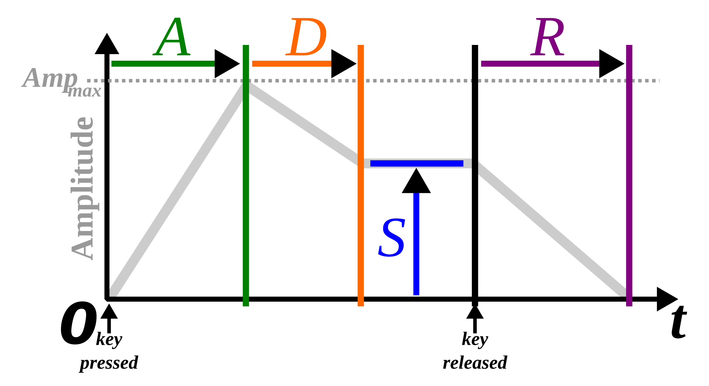

Sounds
ADSR envelope: Combination of Attack, Decay, Sustain, and Release. A: attack time in seconds D: decay time in seconds S: sustain level (0 to 1) R: release time in seconds // attack, decay, sustain, release $: note("[e3 ~ f3 ~ f4]").sound("sine").attack(0).decay(1).sustain(.5).release(1).scope()
Sound List
insect piano wind gm_electric_guitar_muted jazz gm_acoustic_bass metal gm_voice_oohs east gm_blown_bottle crow gm_xylophone casio sine space sawtooth numbers square numbers:1 triangle